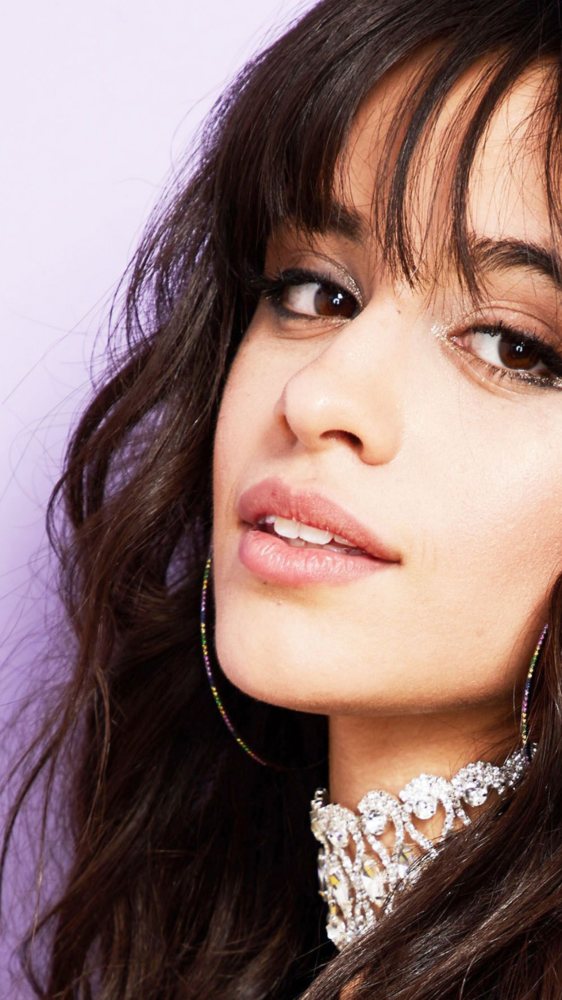
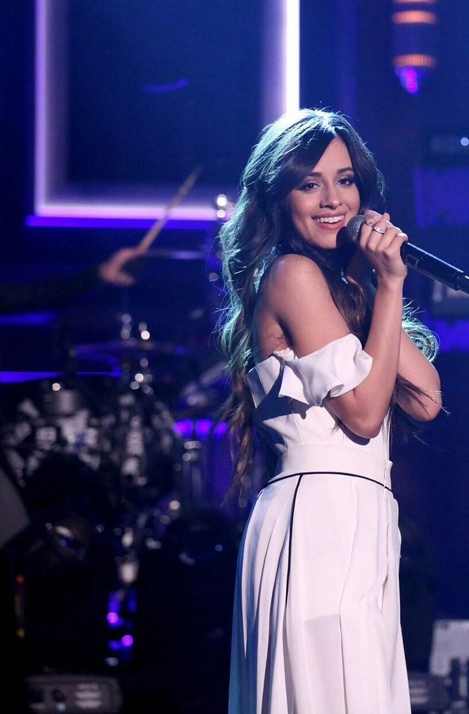

Karla Camila Cabello Estrabao, born March 3, 1997 is a Cuban-born American singer and songwriter.
She rose to prominence as a member of the girl group Fifth Harmony, formed on The X Factor USA in 2012, signing
a joint record deal with Syco Music and Epic Records.

Musicial Carrer:
While in Fifth Harmony, Cabello began to establish herself as a solo artist with the release of the collaborations "I Know What You Did Last Summer" with Shawn Mendes, and "Bad Things" with Machine Gun Kelly, the latter reaching number four on the US Billboard Hot 100. After leaving
the group in late 2016, Cabello released several other collaborations, including "Hey Ma" with Pitbull and J Balvin for The Fate of the Furious soundtrack (2017), and her debut solo single "Crying in the Club".
Cabello's debut studio album, Camila (2018), reached number one on the Billboard 200 chart. The Latin music-influenced pop album was critically well-received, and received a Platinum certification by the Recording Industry Association of America (RIAA). Its lead single
"Havana" topped the charts in several countries including the US and UK, and follow-up single "Never Be the Same".
Carrer in Fifth Harmony:
Camila Cabello auditioned for the TV talent competition show The X Factor in Greensboro, North Carolina with Aretha Franklin's "Respect",[11][12] however, her audition was not aired because the series did not get the rights for the song. After elimination during the "bootcamp"
portion of the process in Miami, Florida, Cabello was called back to the stage along with other contestants Ally Brooke, Normani, Lauren Jauregui, and Dinah Jane to form the girl group that would later become known as Fifth Harmony.[13] After finishing in third place on the show, they signed a joint deal with Syco Music, owned by Simon Cowell, and Epic Records, L.A. Reid's record label.

The group released the EP Better Together (2013) along with the studio albums Reflection (2015) and 7/27 (2016). The latter two generated the singles "Worth It" and "Work from Home", respectively, which reached the top 10 in several international charts.[16] From 2013 through the end of 2016,
Cabello performed in various Fifth Harmony tours. In November 2015, Cabello collaborated with Canadian singer Shawn Mendes on a duet titled "I Know What You Did Last Summer", a song they wrote together.[17][18] The single charted at number 20 in the US and 18 in Canada,[19] and was certified platinum by the Recording Industry Association of America (RIAA).[20] On October 14, 2016, American rapper Machine Gun Kelly released a joint single with Cabello called "Bad Things",[21] which reached a peak of number four on the US Billboard Hot 100 songs chart.[22] Also that year, Time magazine included Cabello on "The 25 Most Influential Teens of 2016" list.
On December 18, 2016, Fifth Harmony announced Cabello's departure, with both sides giving contradictory explanations of the circumstances for her exit.[24][25][26] She appeared in a previously taped performance with the group on Dick Clark's New Year's Rockin' Eve at the end of 2016.[27] Writing about Cabello's time in the group, a Billboard
journalist noted it is "rather uncommon for someone to stand out in a collective as much as Cabello has over the past years.
BreakThrough's:
On January 25, 2017, "Love Incredible", a collaboration with Norwegian DJ Cashmere Cat, leaked online.[29] The official version of the song was released on February 16, and later featured on Cashmere's debut studio album, 9 (2017).[30] Cabello also recorded "Hey Ma" with rappers Pitbull and J Balvin for The Fate of the Furious soundtrack (2017). The Spanish version of the single and its music video were released on March 10, 2017, and the English version was released on April 6.[31][32] The singer was also featured on a collaboration with Major Lazer, Travis Scott and Quavo for the song "Know No Better".[33] In May 2017, Cabello announced the future release
of her first studio album, at the time titled The Hurting. The Healing. The Loving., which she described as "the story of my journey from darkness into light, from a time when I was lost to a time when I found myself again."[34] Her debut solo single "Crying in the Club" was released on May 19, 2017,[35] followed by a performance at the 2017 Billboard Music Awards.[36] The single peaked at number 47 in the United States.[37] She joined Bruno Mars' 24K Magic World Tour as an opening act for several of its dates in 2017,[38] and also partnered with clothing brand Guess as the face for their 2017 Fall campaign.
ew writing and recording sessions for her album were influenced by the success of her single "Havana" featuring Young Thug, which postponed its original release date.[40] Upon its release, the single reached number one in Australia, Canada, the United Kingdom, Ireland, France, Hungary and the United States.[41] It also spent seven weeks atop the US Mainstream Top 40 airplay chart.[42] The song became Spotify's most-streamed song ever by a solo female artist in June 2018, with over 888 million streams at the time.[43] Titled Camila, her debut album is a pop record containing Latin-influenced songs and ballads.[44] Camila was released on January 12, 2018 and
debuted at number one in the United States with 119,000 album-equivalent units, including 65,000 from pure album sales.[45][46] The album was eventually certified platinum in the country.[47] "Real Friends" and "Never Be the Same" were released in the same day on December 7, 2017;[48][49] the latter becoming her third top 10 entry on the Hot 100.[50] "Havana" and "Never Be the Same" made Cabello the first artist to top the Mainstream Top 40 and Adult Top 40 airplay charts with the first two singles from a debut studio album.[51] She later won a MTV Video Music Award for Video of the Year for "Havana".[52]
t
.jpg)